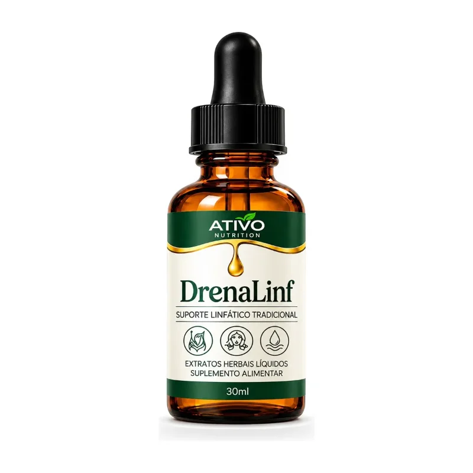
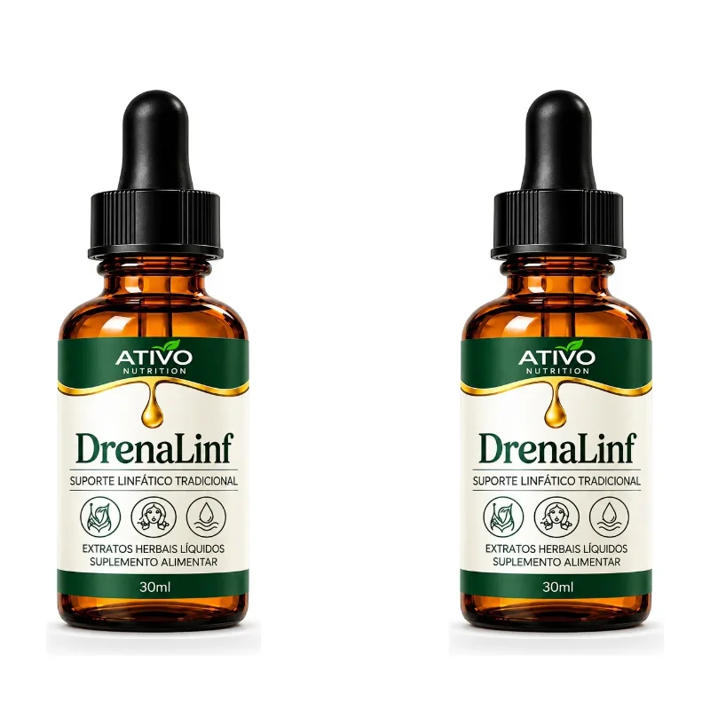
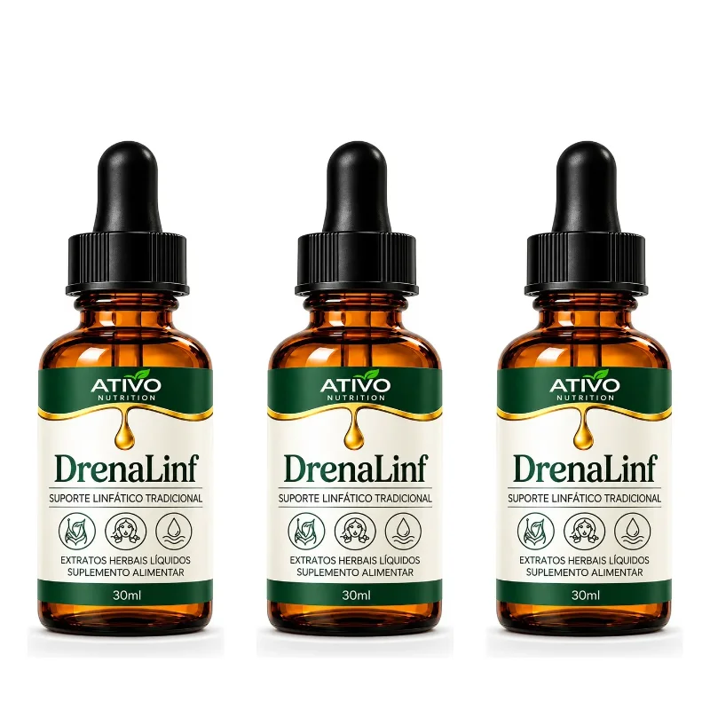
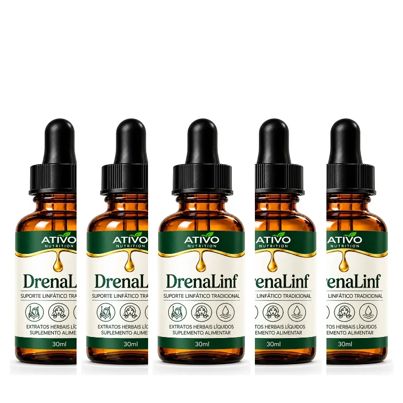

1 Frasco
30 dias de uso
R$ 69,90
R$ 67,80 no Pix
ou 6x de R$ 11,65
COMPRAR 1 FRASCOEquilíbrio e bem-estar
Suplemento alimentar em gotas com café verde, laranja moro, espirulina, semente de uva, vitamina C e zinco. Sabor mel, 15 gotas pela manhã. Vegano, sem açúcar, sem glúten, sem álcool e sem estimulantes.

Kits com 10% de desconto em cada frasco. Cada frasco rende cerca de 30 dias.
30 dias de uso
R$ 69,90
R$ 67,80 no Pix
ou 6x de R$ 11,65
COMPRAR 1 FRASCO
60 dias de uso
De R$ 139,80
R$ 125,82
R$ 122,05 no Pix
R$ 62,91 cada frasco
COMPRAR KIT 2
90 dias de uso
De R$ 209,70
R$ 188,73
R$ 183,07 no Pix
R$ 62,91 cada frasco
COMPRAR KIT 3
150 dias de uso
De R$ 349,50
R$ 314,55
R$ 305,11 no Pix
R$ 62,91 cada frasco
COMPRAR KIT 5Compra segura · Atendimento pelo WhatsApp
Consumir 15 gotas (1 mL) uma vez ao dia, pela manhã. Pingue diretamente sob a língua ou dilua em meio copo de água ou suco. Agite antes de usar.
Extrato de café verde, extrato de laranja moro, espirulina, extrato de semente de uva, vitamina C e zinco. Sabor mel.
Este produto não é um medicamento. Não exceder a recomendação diária de consumo indicada na embalagem. Gestantes, lactantes, crianças e pessoas com alguma condição de saúde ou em uso de medicamentos devem consultar um médico ou nutricionista antes de consumir. Não consumir em caso de alergia a qualquer componente da fórmula. Mantenha fora do alcance de crianças. Conserve em local seco e fresco, ao abrigo da luz, com o frasco bem fechado. NÃO CONTÉM GLÚTEN.
Tome 15 gotas (1 mL) uma vez ao dia, pela manhã. Você pode pingar as gotas diretamente sob a língua ou diluir em meio copo de água ou suco.
O frasco tem 30 ml. Na recomendação de 1 mL por dia, rende cerca de 30 dias. O kit com 2 frascos rende cerca de 60 dias, o de 3 cerca de 90 dias e o de 5 cerca de 150 dias.
O DrenaLinf tem sabor mel. Se preferir um gosto mais suave, dilua as gotas em água ou suco.
Não. A fórmula é vegana e não contém açúcar, glúten, álcool ou estimulantes.
Extrato de café verde, extrato de laranja moro, espirulina, extrato de semente de uva, vitamina C e zinco, com sabor mel.
Os resultados variam de pessoa para pessoa e dependem também de alimentação equilibrada, hidratação e hábitos saudáveis. O DrenaLinf é um suplemento alimentar, não um medicamento, e deve ser usado conforme a recomendação do rótulo.
Gestantes, lactantes e crianças só devem consumir com orientação de um médico ou nutricionista.
Se você usa medicamentos ou tem alguma condição de saúde, consulte um médico ou nutricionista antes de começar.
O prazo e o valor do frete aparecem no checkout depois que você informa o CEP. Compras acima de R$ 199,00 têm frete grátis.
Pix com 3% de desconto ou cartão de crédito em até 6x sem juros, no checkout seguro da Yampi.